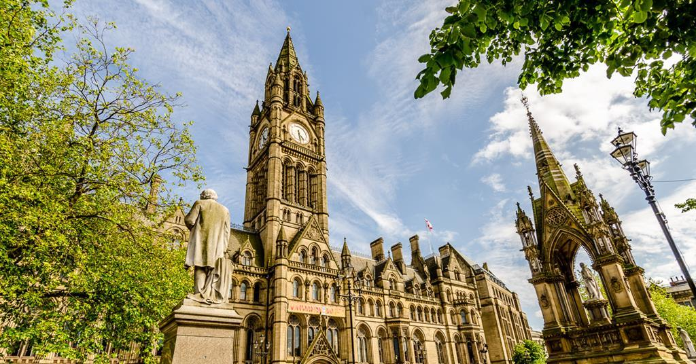

Manchester Town Hall is a Victorian, Neo-gothic municipal building in Manchester, England. It is the ceremonial headquarters of Manchester City Council and houses a number of local government departments. The building faces Albert Square to the north and St Peter's Square to the south, with Manchester Cenotaph facing its southern entrance.Designed by architect Alfred Waterhouse, the town hall was completed in 1877. The building contains offices and grand ceremonial rooms such as the Great Hall which is decorated with Ford Madox Brown's imposing Manchester Murals illustrating the history of the city. The entrance and Sculpture Hall contain busts and statues of influential figures including Dalton, Joule and Barbirolli. The exterior is dominated by the clock tower which rises to 280 feet (85 m) and houses Great Abel, the clock bell.In 1938, a detached Town Hall Extension was completed and is connected by two covered bridges over Lloyd Street. The town hall was designated as a Grade I listed building on 25 February 1952.
Manchester town hall